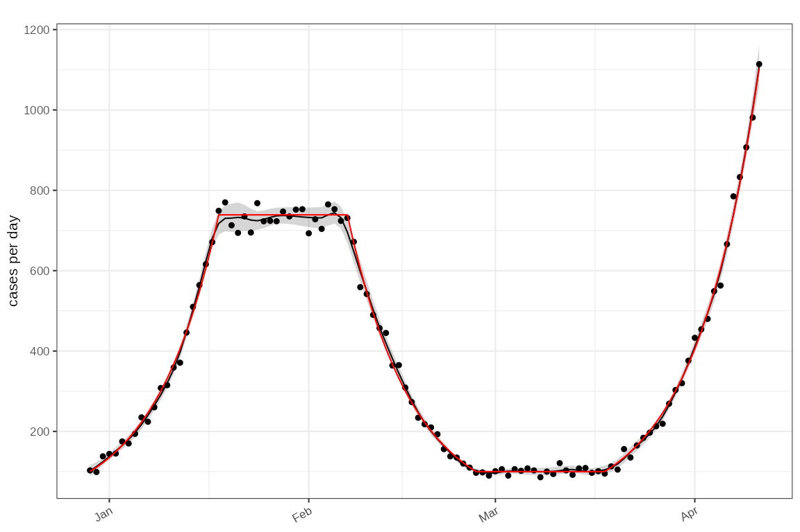
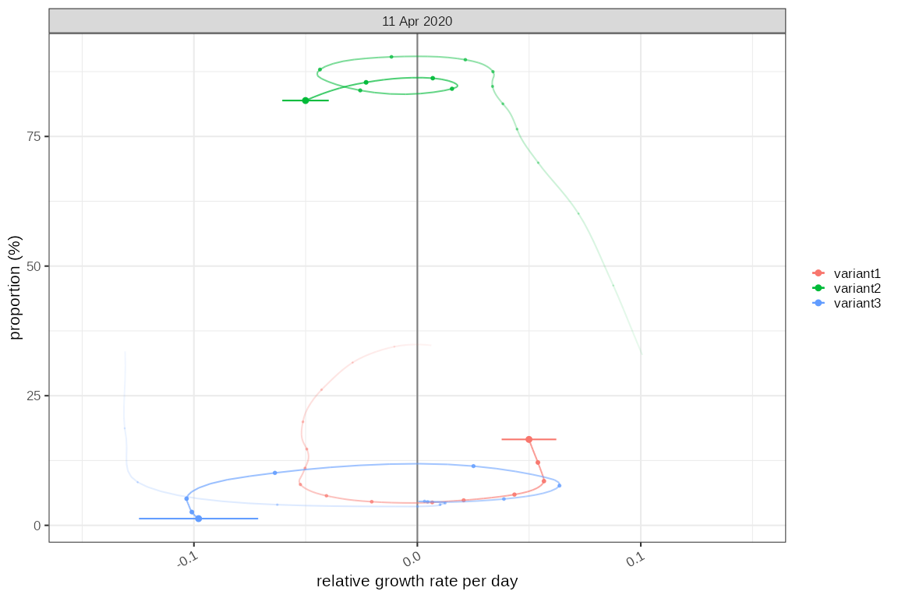
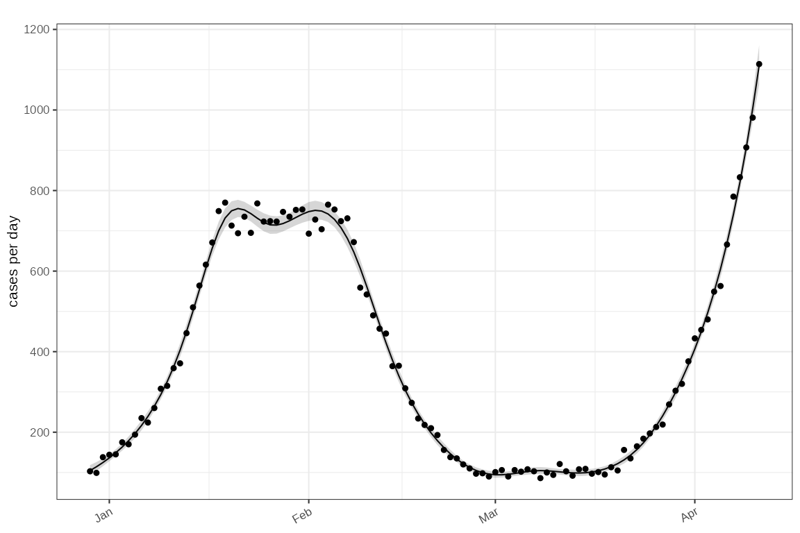

Simulation tests for growth rate estimators
Source:vignettes/estimators-example.Rmd
estimators-example.RmdThis test data is based around a known time varying exponential growth rate with an initial epidemic seed size of 100. The data is simulated with weekly periodicity.
Locfit models
Simple incidence test with a poisson model
An incidence mode based on absolute counts:
data = sim_poisson_model()
data %>% dplyr::glimpse()
#> Rows: 105
#> Columns: 6
#> Groups: statistic [1]
#> $ time <time_prd> 0, 1, 2, 3, 4, 5, 6, 7, 8, 9, 10, 11, 12, 13, 14, 15, 1…
#> $ growth <dbl> 0.1, 0.1, 0.1, 0.1, 0.1, 0.1, 0.1, 0.1, 0.1, 0.1, 0.1, 0.1, …
#> $ imports <dbl> 100, 0, 0, 0, 0, 0, 0, 0, 0, 0, 0, 0, 0, 0, 0, 0, 0, 0, 0, 0…
#> $ rate <dbl> 100.0000, 110.5171, 122.1403, 134.9859, 149.1825, 164.8721, …
#> $ count <int> 91, 105, 134, 150, 132, 164, 176, 215, 204, 242, 273, 315, 3…
#> $ statistic <chr> "infections", "infections", "infections", "infections", "inf…
tmp = data %>% poisson_locfit_model(window=7, deg = 2)
plot_incidence(tmp, data)+ggplot2::geom_line(
mapping=ggplot2::aes(x=as.Date(time),y=rate), data=data, colour="red",inherit.aes = FALSE)
Estimated absolute growth rate versus simulation (red)
plot_growth_rate(tmp)+
ggplot2::geom_line(mapping=ggplot2::aes(x=as.Date(time),y=growth), data=data, colour="red",inherit.aes = FALSE)
plot_growth_phase(tmp)
Multinomial data
Multiple classes are simulated as 3 independent epidemics (‘variant1’, ‘variant2’ and ‘variant3’) with known growth rates and initial sample size resulting in 3 parallel time series. These are combined to give an overall epidemic and a proportional distribution of each ‘variant’ as a fraction of the whole. A relative growth rate is calculated based on set parameters.
data2 = sim_multinomial() %>% dplyr::group_by(class) %>% dplyr::glimpse()
#> Rows: 315
#> Columns: 10
#> Groups: class [3]
#> $ time <time_prd> 0, 1, 2, 3, 4, 5, 6, 7, 8, 9, 10, 11, 12, 13, 14,…
#> $ growth <dbl> 0.1, 0.1, 0.1, 0.1, 0.1, 0.1, 0.1, 0.1, 0.1, 0.1, 0.1,…
#> $ imports <dbl> 100, 0, 0, 0, 0, 0, 0, 0, 0, 0, 0, 0, 0, 0, 0, 0, 0, 0…
#> $ rate <dbl> 100.0000, 110.5171, 122.1403, 134.9859, 149.1825, 164.…
#> $ count <int> 96, 108, 122, 150, 156, 157, 192, 182, 225, 262, 294, …
#> $ statistic <chr> "infections", "infections", "infections", "infections"…
#> $ class <chr> "variant1", "variant1", "variant1", "variant1", "varia…
#> $ proportion <dbl> 0.3333333, 0.3382826, 0.3420088, 0.3445125, 0.3458146,…
#> $ proportion.obs <dbl> 0.3333333, 0.3375000, 0.3495702, 0.3440367, 0.3458980,…
#> $ relative.growth <dbl> 0.025000000, 0.019385523, 0.013833622, 0.008404115, 0.…Poisson model
Firstly fitting the same incidence model in a groupwise fashion:
tmp2 = data2 %>% poisson_locfit_model(window=7, deg = 1)
plot_incidence(tmp2, data2)+scale_y_log1p()
And the absolute growth rates:
plot_growth_rate(modelled = tmp2)+
ggplot2::geom_line(mapping=ggplot2::aes(x=as.Date(time),y=growth, colour=class), data=data2, inherit.aes = FALSE)+
ggplot2::facet_wrap(dplyr::vars(class), ncol=1)
One versus others Binomial model
This looks at the proportions of the three variants and their growth rate relative to each other:
# This will reinterpret total to be the total of positives across all variants
data3 = data2 %>%
dplyr::group_by(time) %>%
dplyr::mutate(denom = sum(count)) %>%
dplyr::group_by(class) %>%
dplyr::glimpse()
#> Rows: 315
#> Columns: 11
#> Groups: class [3]
#> $ time <time_prd> 0, 1, 2, 3, 4, 5, 6, 7, 8, 9, 10, 11, 12, 13, 14,…
#> $ growth <dbl> 0.1, 0.1, 0.1, 0.1, 0.1, 0.1, 0.1, 0.1, 0.1, 0.1, 0.1,…
#> $ imports <dbl> 100, 0, 0, 0, 0, 0, 0, 0, 0, 0, 0, 0, 0, 0, 0, 0, 0, 0…
#> $ rate <dbl> 100.0000, 110.5171, 122.1403, 134.9859, 149.1825, 164.…
#> $ count <int> 96, 108, 122, 150, 156, 157, 192, 182, 225, 262, 294, …
#> $ statistic <chr> "infections", "infections", "infections", "infections"…
#> $ class <chr> "variant1", "variant1", "variant1", "variant1", "varia…
#> $ proportion <dbl> 0.3333333, 0.3382826, 0.3420088, 0.3445125, 0.3458146,…
#> $ proportion.obs <dbl> 0.3333333, 0.3375000, 0.3495702, 0.3440367, 0.3458980,…
#> $ relative.growth <dbl> 0.025000000, 0.019385523, 0.013833622, 0.008404115, 0.…
#> $ denom <int> 288, 320, 349, 436, 451, 454, 557, 531, 662, 778, 884,…Firstly proportions:
tmp3 = data3 %>% proportion_locfit_model(window=14, deg = 2)
plot_proportion(modelled = tmp3,raw = data3)+
ggplot2::facet_wrap(dplyr::vars(class), ncol=1)
And secondly relative growth rate:
plot_growth_rate(modelled = tmp3)+
ggplot2::geom_line(mapping=ggplot2::aes(x=as.Date(time),y=relative.growth, colour=class), data=data2, inherit.aes = FALSE)+
ggplot2::facet_wrap(dplyr::vars(class), ncol=1)
plot_growth_phase(tmp3)
Multinomial model
The multinomial model gives us absolute proportions only (and no growth rates)
# we don't need to calculate the denominator as it is done automatically by the
# multinomial model
tmp4 = data2 %>% multinomial_nnet_model()
#> # weights: 30 (18 variable)
#> initial value 355785.589685
#> iter 10 value 179725.259459
#> iter 20 value 176787.262245
#> final value 174948.423688
#> converged
plot_multinomial(tmp4)
# plot_multinomial(tmp3, events = event_test,normalise = TRUE)GLM models
Poisson model
Run a poisson model on input data using glm this returns
incidence only and derived growth rates are not at this point
supported.
tmp5 = data %>% poisson_glm_model(window=7)
plot_incidence(tmp5,data)
Binomial model
Run a binomial model on input data using glm this
returns absolute proportions only and derived growth rates are not at
this point supported.
tmp6 = data3 %>% proportion_glm_model(window=14, deg = 2)
plot_proportion(tmp6,data3)